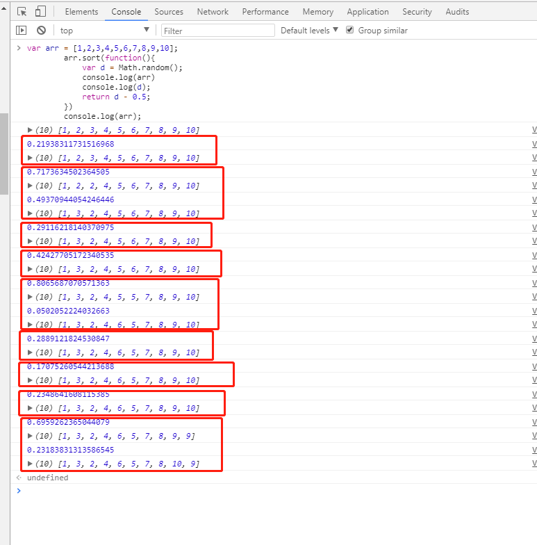
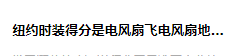
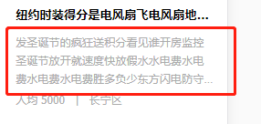
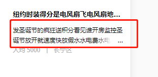
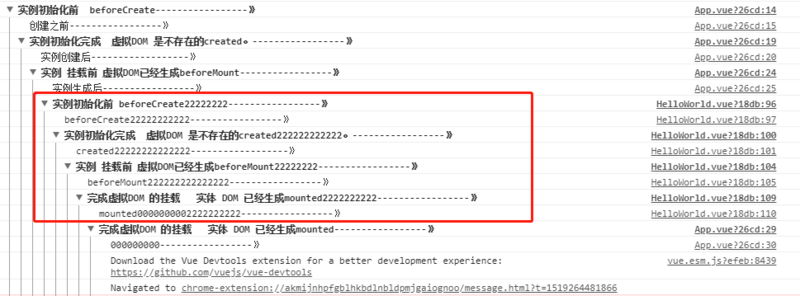

1、 viewport
<meta name="viewport" content="width=device-width,initial-scale=1.0,minimum-scale=1.0,maximum-scale=1.0,user-scalable=no" />
- width: 设置viewport宽度，为一个正整数，或字符串 device-width
- device-width: 设备宽度
- height: 设置viewport高度，一般设置了宽度，会自动解析出高度，可以不用设置
- initial-scale: 默认缩放比例（初始缩放比例），为一个数字，可以带小数
- minimum-scale: 允许用户最小缩放比例，为一个数字，可以带小数
- maximum-scale: 允许用户最大缩放比例，为一个数字，可以带小数
- user-scalable: 是否允许手动缩放
延伸提问：怎样处理 移动端 1px 被渲染成 2px 问题？
1、局部处理
meta 标签中的 viewport 属性 ，initial-scale 设置为 1
rem 按照设计稿标准走，外加利用 transfrome 的 scale(0.5) 缩小一倍即可；
2、全局处理
meta 标签中的 viewport 属性 ，initial-scale 设置为 0.5
rem 按照设计稿标准走即可
2、跨域的几种方式
首先了解下浏览器的同源策略
同源策略/SOP（Same origin policy）是一种约定，由Netscape公司1995年引入浏览器，它是浏览器最核心也最基本的安全功能，如果缺少了同源策略，浏览器很容易受到XSS、CSRF等攻击。所谓同源是指"协议+域名+端口"三者相同，即便两个不同的域名指向同一个ip地址，也非同源。
那么怎样解决跨域问题的呢？
1 通过jsonp跨域，原生实现：
<script>
var script = document.createElement('script');
script.type = 'text/javascript';
// 传参并指定回调执行函数为onBack
script.src = 'http://www.....:8080/login?user=admin&callback=onBack';
document.head.appendChild(script);
// 回调执行函数
function onBack(res) {
alert(JSON.stringify(res));
}
</script>
2、document.domain + iframe 跨域
此方案仅限主域相同，子域不同的跨域应用场景。
1.）父窗口：(http://www.domain.com/a.html)
<iframe id="iframe" src="http://child.domain.com/b.html"></iframe> <script> document.domain = 'domain.com'; var user = 'admin'; </script>
2.）子窗口：(http://child.domain.com/b.html)
<script>
document.domain = 'domain.com';
// 获取父窗口中变量
alert('get js data from parent ---> ' + window.parent.user);
</script>
弊端：请看下面渲染加载优化
3、nginx 代理跨域
4、nodejs 中间件代理跨域
5、后端在头部信息里面设置安全域名
3、渲染优化
1.禁止使用iframe（阻塞父文档onload事件）
- iframe会阻塞主页面的Onload事件；
- 搜索引擎的检索程序无法解读这种页面，不利于SEO;
- iframe和主页面共享连接池，而浏览器对相同域的连接有限制，所以会影响页面的并行加载。
使用 iframe 之前需要考虑这两个缺点。如果需要使用 iframe，最好是通过 javascript 动态给 iframe 添加 src 属性值，这样可以绕开以上两个问题。
2.禁止使用gif图片实现loading效果（降低CPU消耗，提升渲染性能）；
3、使用CSS3代码代替JS动画（尽可能避免重绘重排以及回流）；
4、对于一些小图标，可以使用base64位编码，以减少网络请求。但不建议大图使用，比较耗费CPU；
小图标优势在于：
- 1.减少HTTP请求；
- 2.避免文件跨域；
- 3.修改及时生效；
5、页面头部的 会阻塞页面；（因为 Renderer进程中 JS线程和渲染线程是互斥的）；
6、页面头部
7、页面中空的 href 和 src 会阻塞页面其他资源的加载 (阻塞下载进程)；
8、网页Gzip，CDN托管，data缓存 ，图片服务器；
9、前端模板 JS+数据，减少由于HTML标签导致的带宽浪费，前端用变量保存AJAX请求结果，每次操作本地变量，不用请求，减少请求次数
10、用innerHTML代替DOM操作，减少DOM操作次数，优化javascript性能。
11、当需要设置的样式很多时设置className而不是直接操作style。
12、少用全局变量、缓存DOM节点查找的结果。减少IO读取操作。
13、避免使用CSS Expression（css表达式)又称Dynamic properties(动态属性)。
14、图片预加载，将样式表放在顶部，将脚本放在底部 加上时间戳。
15、 避免在页面的主体布局中使用table，table要等其中的内容完全下载之后才会显示出来，显示比div+css布局慢。
对普通的网站有一个统一的思路，就是尽量向前端优化、减少数据库操作、减少磁盘IO。 向前端优化指的是，在不影响功能和体验的情况下，能在浏览器执行的不要在服务端执行，能在缓存服务器上直接返回的不要到应用服务器，程序能直接取得的结果不要到外部取得，本机内能取得的数据不要到远程取，内存能取到的不要到磁盘取，缓存中有的不要去数据库查询。减少数据库操作指减少更新次数、缓存结果减少查询次数、将数据库执行的操作尽可能的让你的程序完成（例如join查询），减少磁盘IO指尽量不使用文件系统作为缓存、减少读写文件次数等。程序优化永远要优化慢的部分，换语言是无法"优化"的。
4、事件的各个阶段
1：捕获阶段 ---> 2：目标阶段 ---> 3：冒泡阶段 document ---> target目标 ----> document
由此，addEventListener 的第三个参数设置为 true 和 false 的区别已经非常清晰了：
- true 表示该元素在事件的"捕获阶段"（由外往内传递时）响应事件；
- false 表示该元素在事件的"冒泡阶段"（由内向外传递时）响应事件。
5、let var const
-
let: 允许你声明一个作用域被限制在块级中的变量、语句或者表达式 let 绑定不受变量提升的约束，这意味着let声明不会被提升到当前，该变量处于从块开始到初始化处理的"暂存死区"。
-
var: 声明变量的作用域限制在其声明位置的上下文中，而非声明变量总是全局的, 由于变量声明（以及其他声明）总是在任意代码执行之前处理的，所以在代码中的任意位置声明变量总是等效于在代码开头声明。
-
const 声明创建一个值的只读引用 (即指针)，这里就要介绍下 JS 常用类型: String、Number、Boolean、Array、Object、Null、Undefined。其中基本类型有 Undefined、Null、Boolean、Number、String，保存在栈中；复合类型 有 Array、Object ，保存在堆中； 基本数据当值发生改变时，那么其对应的指针也将发生改变，故造成 const申明基本数据类型时，再将其值改变时，将会造成报错， 例如 const a = 3 ; a = 5 时 将会报错；但是如果是复合类型时，如果只改变复合类型的其中某个Value项时， 将还是正常使用；
6、箭头函数
语法比函数表达式更短，并且不绑定自己的 this，arguments，super 或 new.target。这些函数表达式最适合用于非方法函数，并且它们不能用作构造函数。
7、快速的让一个数组乱序
var arr = [1,2,3,4,5,6,7,8,9,10];
arr.sort(function(){
return Math.random() - 0.5;
})
console.log(arr);
此处解释：（语言组织能力不足，请勿吐槽）

首先，当 return 的值：
- 小于 0 ，那么 a 会被排列到 b 之前；
- 等于 0 ， a 和 b 的相对位置不变；
- 大于 0 ， b 会被排列到 a 之前；
这里你会发现起始的时候数组是正序排列，每当进行一次排列的时候， 都会先随机一个随机数（注意这里的每一次排列 指 每一个红框指一次排列， 共9次排列 ， 一次排列中可能存在多次比较）；
当一次排列的随机数大于 0.5 时 将会进行第二次比较， 当第二次随机数 仍然大于 0.5 时 ，将会再进行一次比较， 直到 随机数大于 0.5 或者排列到第一位；
当一次排列的随机数 小于 0.5 时 当前比较的两项索引将不会改变 ，继续下一次的排列；
8、字体font-family
@ 宋体 SimSun
@ 黑体 SimHei
@ 微软雅黑 Microsoft Yahei
@ 微软正黑体 Microsoft JhengHei
@ 新宋体 NSimSun
@ 新细明体 MingLiU
@ 细明体 MingLiU
@ 标楷体 DFKai-SB
@ 仿宋 FangSong
@ 楷体 KaiTi
@ 仿宋_GB2312 FangSong_GB2312
@ 楷体_GB2312 KaiTi_GB2312
@
@ 说明：中文字体多数使用宋体、雅黑，英文用Helvetica
body { font-family: Microsoft Yahei,SimSun,Helvetica; }
9、可能用到的meta标签
<!-- 设置缩放 --> <meta name="viewport" content="width=device-width, initial-scale=1, user-scalable=no, minimal-ui" /> <!-- 可隐藏地址栏，仅针对IOS的Safari（注：IOS7.0版本以后，safari上已看不到效果） --> <meta name="apple-mobile-web-app-capable" content="yes" /> <!-- 仅针对IOS的Safari顶端状态条的样式（可选default/black/black-translucent ） --> <meta name="apple-mobile-web-app-status-bar-style" content="black" /> <!-- IOS中禁用将数字识别为电话号码/忽略Android平台中对邮箱地址的识别 --> <meta name="format-detection"content="telephone=no, email=no" />
其他meta标签
<!-- 启用360浏览器的极速模式(webkit) --> <meta name="renderer" content="webkit"> <!-- 避免IE使用兼容模式 --> <meta http-equiv="X-UA-Compatible" content="IE=edge"> <!-- 针对手持设备优化，主要是针对一些老的不识别viewport的浏览器，比如黑莓 --> <meta name="HandheldFriendly" content="true"> <!-- 微软的老式浏览器 --> <meta name="MobileOptimized" content="320"> <!-- uc强制竖屏 --> <meta name="screen-orientation" content="portrait"> <!-- QQ强制竖屏 --> <meta name="x5-orientation" content="portrait"> <!-- UC强制全屏 --> <meta name="full-screen" content="yes"> <!-- QQ强制全屏 --> <meta name="x5-fullscreen" content="true"> <!-- UC应用模式 --> <meta name="browsermode" content="application"> <!-- QQ应用模式 --> <meta name="x5-page-mode" content="app"> <!-- windows phone 点击无高光 --> <meta name="msapplication-tap-highlight" content="no">
10、消除 transition 闪屏
.css {
-webkit-transform-style: preserve-3d;
-webkit-backface-visibility: hidden;
-webkit-perspective: 1000;
}
过渡动画（在没有启动硬件加速的情况下）会出现抖动的现象， 以上的解决方案只是改变视角来启动硬件加速的一种方式；启动硬件加速的另外一种方式：
.css {
-webkit-transform: translate3d(0,0,0);
-moz-transform: translate3d(0,0,0);
-ms-transform: translate3d(0,0,0);
transform: translate3d(0,0,0);
}
启动硬件加速
最常用的方式：translate3d、translateZ、transform
opacity 属性/过渡动画（需要动画执行的过程中才会创建合成层，动画没有开始或结束后元素还会回到之前的状态）
will-chang 属性（这个比较偏僻），一般配合opacity与translate使用（而且经测试，除了上述可以引发硬件加速的属性外，其它属性并不会变成复合层）。
弊端：硬件加速会导致 CPU 性能占用量过大，电池电量消耗加大 ；因此尽量避免泛滥使用硬件加速。
11、android 4.x bug
- 1.三星 Galaxy S4中自带浏览器不支持border-radius缩写
- 2.同时设置border-radius和背景色的时候，背景色会溢出到圆角以外部分
- 3.部分手机(如三星)，a链接支持鼠标:visited事件，也就是说链接访问后文字变为紫色
- 4.android无法同时播放多音频audio
- 5.oppo 的border-radius 会失效
12、JS 判断设备来源
// 判断移动端设备
function deviceType(){
var ua = navigator.userAgent;
var agent = ["Android", "iPhone", "SymbianOS", "Windows Phone", "iPad", "iPod"];
for(var i=0; i<len,len = agent.length; i++){
if(ua.indexOf(agent[i])>0){
break;
}
}
}
deviceType();
window.addEventListener('resize', function(){
deviceType();
})
// 判断微信浏览器
function isWeixin(){
var ua = navigator.userAgent.toLowerCase();
if(ua.match(/MicroMessenger/i)=='micromessenger'){
return true;
}else{
return false;
}
}
13、audio元素和video元素在ios和andriod中无法自动播放
原因：因为各大浏览器都为了节省流量，做出了优化，在用户没有行为动作时（交互）不予许自动播放；
//音频，写法一
<audio src="music/bg.mp3" autoplay loop controls>你的浏览器还不支持哦</audio>
//音频，写法二
<audio controls="controls">
<source src="music/bg.ogg" type="audio/ogg"></source>
<source src="music/bg.mp3" type="audio/mpeg"></source>
优先播放音乐bg.ogg，不支持在播放bg.mp3
</audio>
//JS绑定自动播放（操作window时，播放音乐）
$(window).one('touchstart', function(){
music.play();
})
//微信下兼容处理
document.addEventListener("WeixinJSBridgeReady", function () {
music.play();
}, false);
//小结
//1.audio元素的autoplay属性在IOS及Android上无法使用，在PC端正常；
//2.audio元素没有设置controls时，在IOS及Android会占据空间大小，而在PC端Chrome是不会占据任何空间；
//3.注意不要遗漏微信的兼容处理需要引用微信JS；
14、css实现单行文本溢出显示 ...
直接上效果：相对于多行文本溢出做处理， 单行要简单多，且更容易理解。

实现方法:
overflow: hidden; text-overflow:ellipsis; white-space: nowrap;
当然还需要加宽度width属来兼容部分浏览。
15、实现多行文本溢出显示...
效果：

实现方法：
display: -webkit-box; -webkit-box-orient: vertical; -webkit-line-clamp: 3; overflow: hidden;
适用范围：
因使用了WebKit的CSS扩展属性，该方法适用于WebKit浏览器及移动端；
注：
1、-webkit-line-clamp 用来限制在一个块元素显示的文本的行数。 为了实现该效果，它需要组合其他的WebKit属性。常见结合属性：
2、display: -webkit-box; 必须结合的属性，将对象作为弹性伸缩盒子模型显示 。
3、-webkit-box-orient 必须结合的属性，设置或检索伸缩盒对象的子元素的排列方式 。
如果你觉着这样还不够美观， 那么就接着往下看效果：

这样 是不是你想要的呢？
实现方法：
div {
position: relative;
line-height: 20px;
max-height: 40px;
overflow: hidden;
}
div:after {
content: "..."; position: absolute; bottom: 0; right: 0; padding-left: 40px;
background: -webkit-linear-gradient(left, transparent, #fff 55%);
background: -o-linear-gradient(right, transparent, #fff 55%);
background: -moz-linear-gradient(right, transparent, #fff 55%);
background: linear-gradient(to right, transparent, #fff 55%);
}
不要只顾着吃，要注意胃口，此方法有个弊端 那就是 【未超出行的情况下也会出现省略号】 ，这样会不会很挫！！！ 没办法，只能结合JS 进行优化该方法了。
注：
- 1、将height设置为line-height的整数倍，防止超出的文字露出。
- 2、给p::after添加渐变背景可避免文字只显示一半。
- 3、由于ie6-7不显示content内容，所以要添加标签兼容ie6-7（如：…）；兼容ie8需要将::after替换成:after。
16、让图文不可复制
这点应该大家 都很熟悉了， 某些时候【你懂的】为了快捷搜索答案，可是打死也不让你复制:
-webkit-user-select: none; -ms-user-select: none; -moz-user-select: none; -khtml-user-select: none; user-select: none;
17、盒子垂直水平居中
这个问题好像面试必问的吔！反正我是必问的，哈哈！！！ 其实无关多少种实现思路，只要你能实现就可以！
提供4种方法:
-
1、定位 盒子宽高已知， position: absolute; left: 50%; top: 50%; margin-left:-自身一半宽度; margin-top: -自身一半高度;
-
2、table-cell布局 父级 display: table-cell; vertical-align: middle; 子级 margin: 0 auto;
-
3、定位 + transform ; 适用于 子盒子 宽高不定时； （这里是本人常用方法）
position: relative / absolute; /*top和left偏移各为50%*/ top: 50%; left: 50%; /*translate(-50%,-50%) 偏移自身的宽和高的-50%*/ transform: translate(-50%, -50%); 注意这里启动了3D硬件加速哦 会增加耗电量的 （至于何是3D加速 请看浏览器进程与线程篇）
-
4、flex 布局
父级： /*flex 布局*/ display: flex; /*实现垂直居中*/ align-items: center; /*实现水平居中*/ justify-content: center;
再加一种水平方向上居中 ：margin-left : 50% ; transform: translateX(-50%);
那有些网页为了尊重原创，复制的文本 都会被加上一段来源说明，是如何做到的呢？问的好！ 等的就是你这个问题 -_- 。
大致思路：
- 1、答案区域监听copy事件，并阻止这个事件的默认行为。
- 2、获取选中的内容（window.getSelection()）加上版权信息，然后设置到剪切板（clipboarddata.setData()）。
18、改变 placeholder 的字体颜色大小
其实这个方法也就在 PC 端可以，真机上屁用都没有，当时我就哭了。 但还是贴出来吧
input::-webkit-input-placeholder {
/* WebKit browsers */
font-size:14px;
color: #333;
}
input::-moz-placeholder {
/* Mozilla Firefox 19+ */
font-size:14px;
color: #333;
}
input:-ms-input-placeholder {
/* Internet Explorer 10+ */
font-size:14px;
color: #333;
}
19、最快捷的数组求最大值
var arr = [ 1,5,1,7,5,9]; Math.max(...arr) // 9
20、更短的数组去重写法
[...new Set([2,"12",2,12,1,2,1,6,12,13,6])] // [2, "12", 12, 1, 6, 13]
21、 vue 父子组件嵌套时，组件内部的各个生命周期钩子触发先后顺序
首先 我们可以把 子组件当做function函数来看待，当父组件 import 子组件的时候， 就当是声明了 并加载了这个函数，在调用的时候才会去执行这个函数（子组件）。那么父子组件中的各个声明周期钩子触发的先后顺序是怎样的呢？如下图：

文章来源：https://segmentfault.com/a/1190000013331105